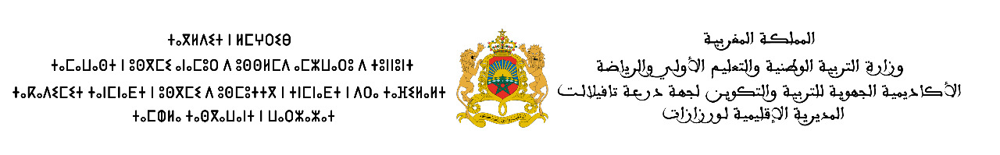

Matière:
Mathématique
Niveau:
2
eme
BAC SP et SVT
Séance
Contenue
Remarque
Chapitre 01: Continuité Suite
Image d'un intervalle par une fonction continu
Partie 1
:
Partie 2
: Image d'un intervalle par une fonction continue et strictement monotone
Continuété de la composée de deux fonctions continues:
SP; SVT
Page Précédente // Page suivante